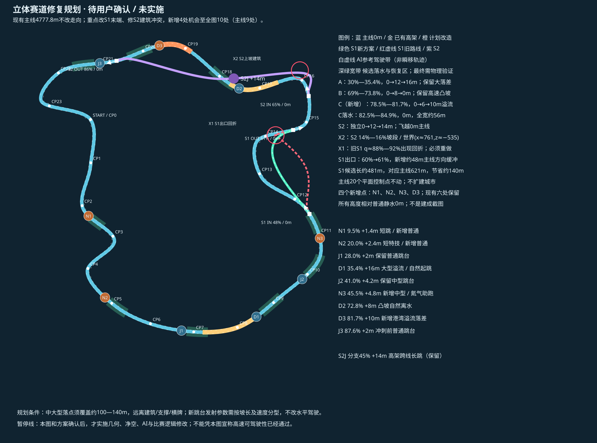
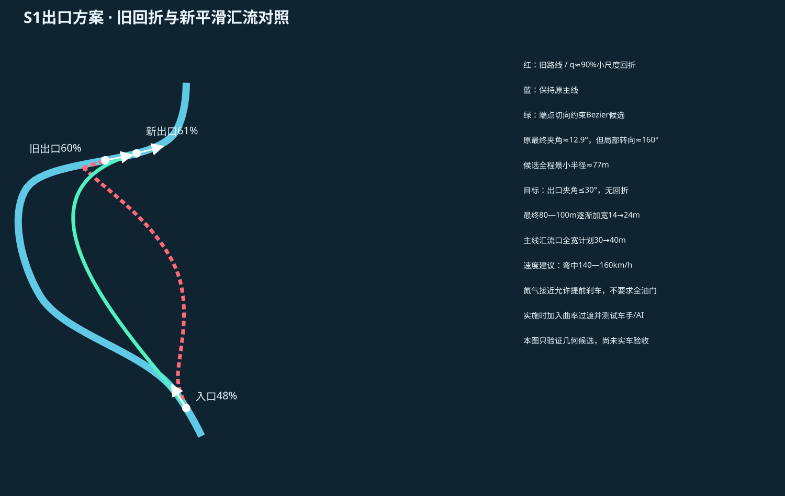
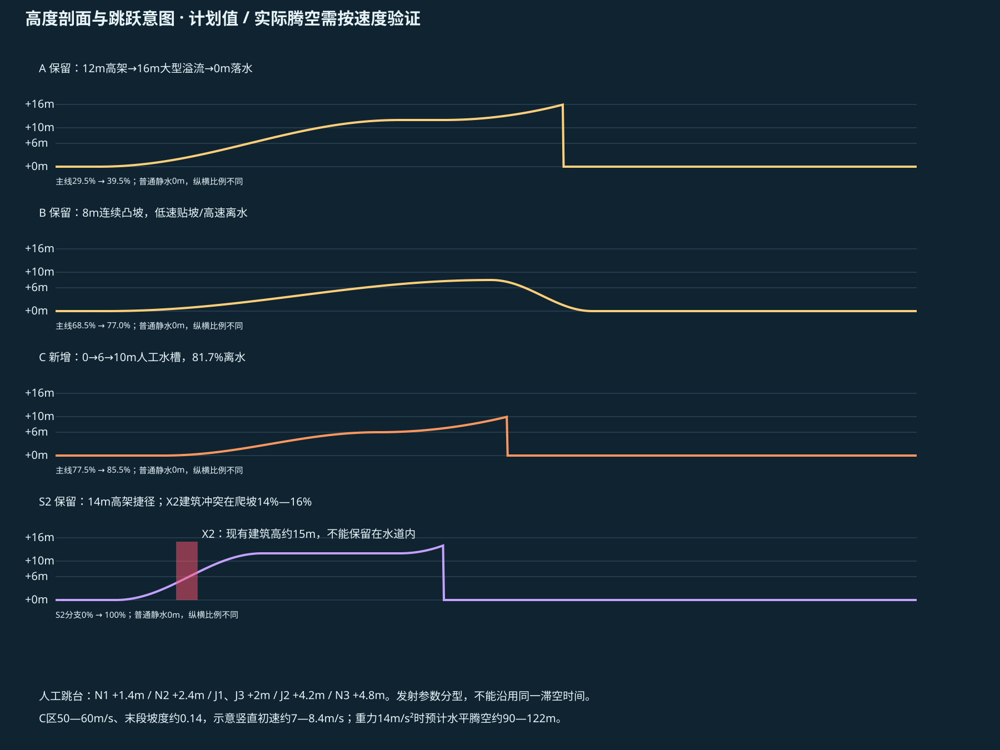

赛道修复与立体跳跃强化 · 待确认方案
尚未改动游戏代码和资产。已建立Git基线并复现S1出口回折、S2坡道被建筑吞没。先确认以下布局，再实施与测试；本页不是已建成的赛道。
推荐：S1入口48%不动，出口后延至61%；新增N1/N2/N3位于9.5%/20%/45.5%；C区78.5%—81.7%，最高+10m。全图10处起跳，主线9处；保留原主线走向、速度和画质。

俯视规划：点击原图放大。橙为新增，红为问题，绿为S1新线，紫为高架捷径，白虚线为AI参考带。
S1出口：旧线最终夹角虽只有12.9°，但前面存在约160°回折；新候选线取消回折，末段再作曲率过渡与加宽。
高度剖面：A/B保留，C新增；红色矩形标出S2已有建筑占据的空间。真实飞行和安全落点将在确认后测试。请确认：61%的S1出口、9.5%/20%/45.5%的新增跳台，以及78.5%—81.7%的10m港湾落差区是否采用。 本轮停在规划确认，不扩建城市、不部署。